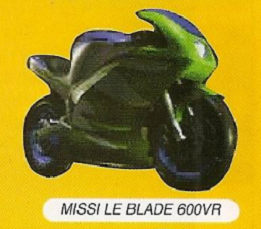

É hora de esquentar os pneus da sua moto e preparar as luvas. A mais violenta corrida sobre duas rodas irá começar. Bem vindo a Road Rash. Uma união de jogo de corrida com jogo de luta. Em Road Rash 3D, objetivo não é só chegar em primeiro lugar, mas também dar boas porradas nos adversários. Por isso, neste jogo vale tudo: fechar, bater e até derrubar o oponente para ganhar a disputa. Para tornar as coisas mais emocionantes, além de tomar cuidado com as trapaças dos seus rivais é preciso fugir da polícia. No total, são milhares de quilometros de estradas livres para mostrar força, habilidade e malandragem. O rock trash da trilha sonora e as eletrizantes cenas de abertura são empolgantes. No total são 12 opções de motos diferentes, mas no início poderá escolher somente entre quatros modelos (as outras aparecerão conforme for vencendo). Após a seleção, automaticamente passará a ser menbro de uma das quatro gangues de motoqueiros do jogo.
Os Techgeists possuem motos futuristas
Desades são mais violentos e suas motos tem um estilo mais classicos
A 12 super maquinas, cada ima com uma performance e qualidade diferente. Há dede modelos antigos até verdadeiras maravilhas da mecânica moderna. Claro que as motos do passado são mais lentas, porém têm mais estabilidade e são difíceis de serem derrubadas.
|  |
Um detalhe importante é que cada gangue do jogo tem uma cor de roupa diferente, e durante a corrida não deve derrubar seus companheiros de equipe. Não deixe ninguem de outra gangue ficar de pé até conseguir a primeira colocação.
Uma boa maneira de atrapalhar seus adversários é derrubá-lo no momento em que a polícia aparecer, assim além deles perderem tempo também levarão uma multa. Além disso não esqueça de roubar armas como correntes de ferro, pedaços de madeira e barras de aço dos seus oponente. Elas são indispensável para vencer a disputa